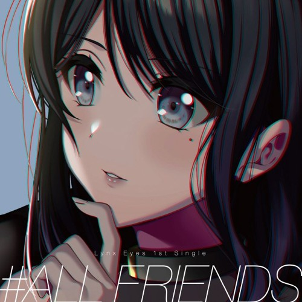
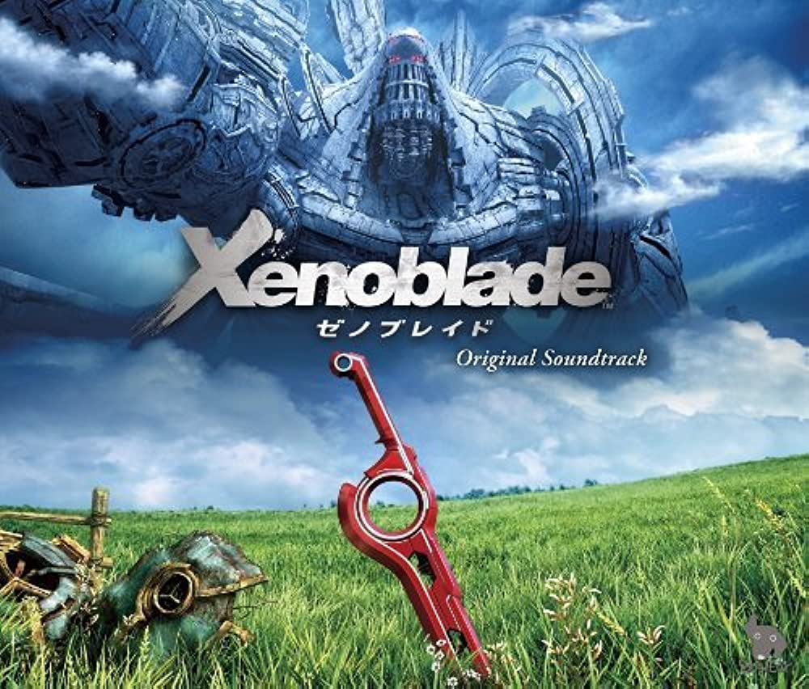
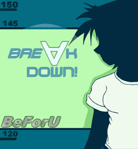
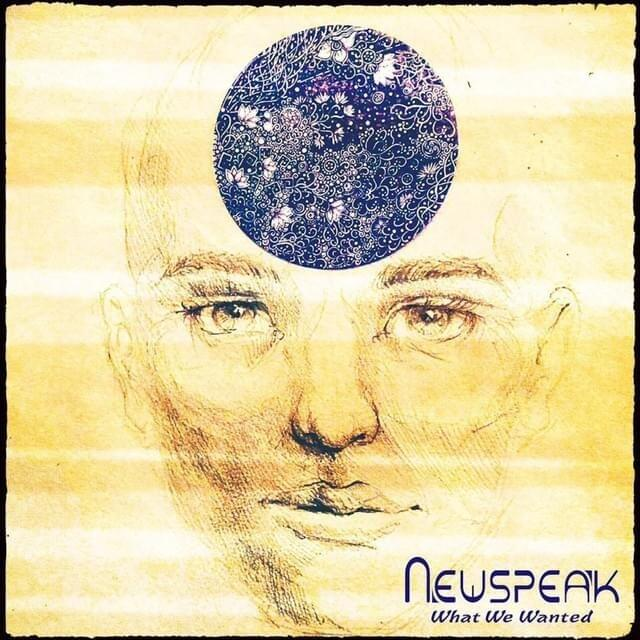
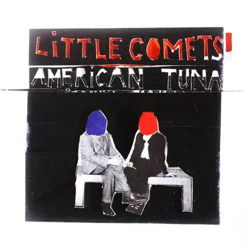
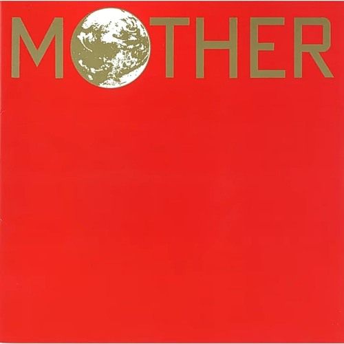
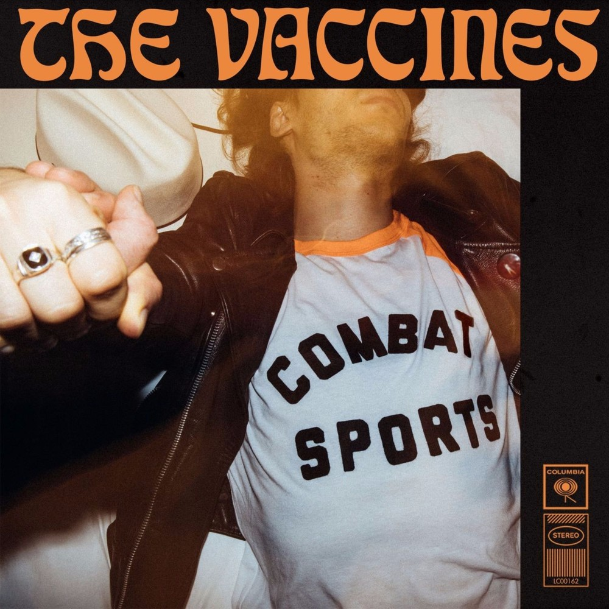
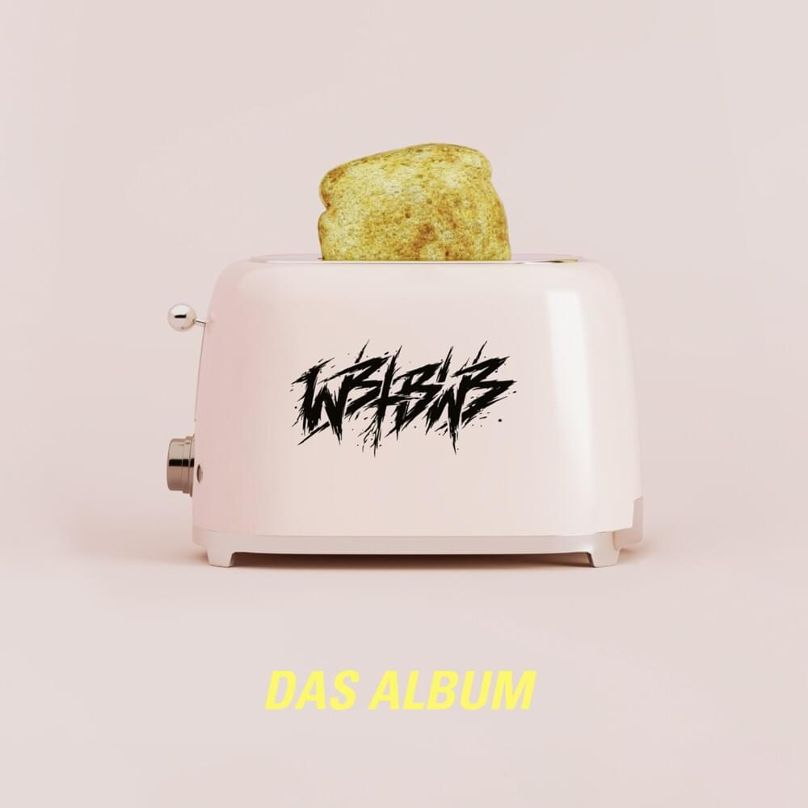

Christopher Tin, Soweto Gospel Choir
Genre: Choral
Baba Yetu is a soundtrack from the video game Civilization IV (2005). It is the Lord's Prayer sung in Swahili.

globe
Covered by Lynx Eyes
Genre: J-pop
Lynx Eyes is a fictional musical duo from the video game D4DJ (2020). I like the vocals of the cover more and it sounds more powerful than the original.

ACE+
Genre: Electronic
The soundtrack is from the video game Xenoblade (2010). The introduction gives a very descriptive atmosphere and is followed by trancey synths that give the track a very unique profile.

BeForU
Genre: J-Rock, Pop Rock
The song holds the energy that I can only find in 90s and 00s songs. The song's energetic lyrics about leaving things behind and going "full throttle" are a common theme in Japanese Pop music, even until now.

Newspeak
Genre: Indie Rock
This song has heavy emphasis on its keys, and they are playful. The repetitiveness of the song makes it catchy and makes me want to sing along.

Little Comets
Genre: Indie Rock, Indie Pop
The song overall feels "naked". The lyrics are playfully sung that makes it fun to sing along to.
Katie Thompson
Genre: Country
It is a very slow song. The harmony between Thompson's voice and the instruments make the song relaxing, but the lyrics make it bitter.

Keiichi Suzuki
Genre: Pop
The song's chiptune version is a recurring soundtrack in the video game MOTHER (1989). The vocal version was sung by Catherine Warwick.

The Vaccines
Genre: Indie Rock, Alternative Rock
The song is cheerful and energetic. The synths in this song have a large impact, the fullness of its sound makes it nice to listen to.

We Butter The Bread With Butter
Genre: Metalcore, Trancecore
This song has so much energy that I never get tired listening to it. It is a satirical song about e-scooters.